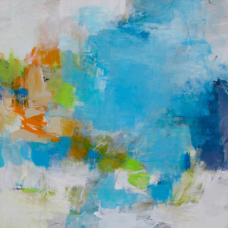

Abstract Mania
presenting artworks from abstract gallery artists
June 7 – September 1, 2018

François Wunschel is a French artist born in Strasbourg in 1978, currently living in Paris (FR). He graduated in architecture and urbanism, and became a founding member of the EXYZT group, whom was commissioned to design and build an installation for the Venice Architecture Biennale in 2006.
Founder of 1024 Architecture in 2008, with associate Pier Schneider, Wunschel creates hybrid spaces and physical geometric structures animated by digital projections and dynamic lighting. A frequent collaborator on musical projects and world music tours, he has worked with composers and musicians including Etienne de Crecy and Vitalic, producing unique designs that challenge the relationship between architectural space, light, movement and digital medias.
His work is about light, geometry, movements and most generally about perception of space and volume. His body of work includes immersive performances using new technology and most specifically video mapping projection, stereoscopic renderings and lenticular prints.
TO RECEIVE A PDF WITH PRICING AND AVAILBLE WORKS PLEASE CONTACT US HERE